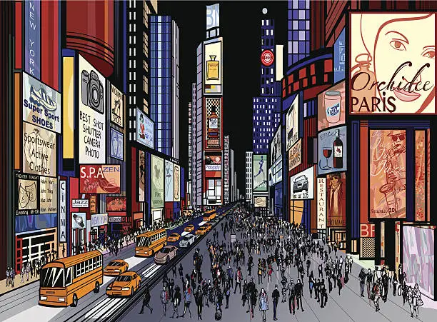
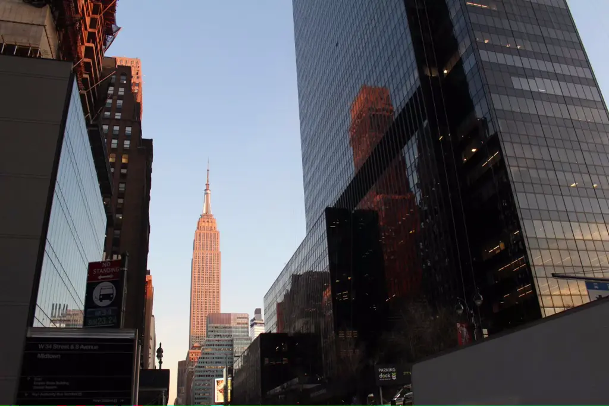

Historia de la ciudad
La ciudad de Nueva York es conocida por su impresionante horizonte urbano, que incluye icónicos rascacielos como el Empire State Building, el One World Trade Center y el Chrysler Building, entre otros. Estos edificios emblemáticos son símbolos reconocidos a nivel mundial y representan la innovación y la grandeza arquitectónica de la ciudad.
Cuenta con una serie de elementos emblematicos que harian que cualquier persona que los viese reconociese de que ciudad se trata y podemos ver algunos de ellos en la sección de Noticias.

Cabe destacar también la ciudad como epicentro de la diversidad cultural, Nueva York es conocida por su diversidad cultural, con una población compuesta por personas de diferentes orígenes étnicos, religiones, idiomas y culturas de todo el mundo. Esta mezcla de culturas se refleja en la rica escena artística, culinaria y social de la ciudad, lo que la convierte en un crisol de culturas y un punto de encuentro para personas de todo el mundo.
No puede faltar lo que aporta esta ciudad a la cultura y el entretenimiento es un importante epicentro cultural y de entretenimiento, con una vibrante escena artística, teatral y musical. La ciudad es hogar de numerosos museos de clase mundial, galerías de arte, teatros de Broadway y una gran cantidad de eventos culturales y festivales a lo largo del año.
También es una de las ciudades de mayor influencia en la moda y el estilo, es conocida como una capital de la moda y el estilo, con una escena de moda y diseño en constante evolución. La ciudad es hogar de importantes eventos de moda, diseñadores de renombre mundial, tiendas de lujo y una influente cultura de la moda y el estilo que se refleja en la forma de vestir y el estilo de vida de sus habitantes Apasionados de la moda de todo el mundo van a NYC en busca de una oportunidad.
Estos son solo algunos de los elementos que hacen de Nueva York una ciudad emblemática, reconocida a nivel mundial por su diversidad, arquitectura, finanzas, cultura, historia, moda y estilo de vida. La Ciudad de Nueva York es considerada un lugar icónico y representativo de la modernidad, la innovación y la diversidad cultural en el mundo

El edificio más famoso del mundo, el Empire State Building: Un rascacielos mundialmente famoso,
el Empire State Building es un icónico símbolo del horizonte de NYC.
Con 1,454 pies (443 metros) de altura, esta obra maestra del Art Deco ofrece vistas panorámicas de la ciudad desde su observatorio en el piso 86.
Pese a que la ciudad cuenta con otros grandes
edificios emblemáticos desde hace cientos de años, la ciudad no deja de renovarse
y añadir a su horizonte nuevos edificios y miradores, como por ejemplo el Summit One Vanderbilt inaugurado despues
de la pandemia y que ya recoge algunos de las mejores vistas de la ciudad desde todos los angulos.
14.09.2009
Summit One VanderbiltEl Summit One Vanderbilt es un observatorio de Manhattan ubicado en el edificio One Vanderbilt, que se encuentra en la esquina de la calle 42 y Vanderbilt Avenue, cerca de Grand Central Terminal. El edificio One Vanderbilt es un rascacielos de 77 pisos y 1.401 pies (427 metros) de altura que fue construido en 2020. Es el edificio más alto de Midtown Manhattan y el segundo edificio más alto de la ciudad de Nueva York después del One World Trade Center. El Summit One Vanderbilt es un observatorio de última generación ubicado en los pisos 91 y 92 del edificio One Vanderbilt. Ofrece vistas panorámicas de 360 grados del skyline de Manhattan y más allá.
Leer más27.07.2014
Top of The Rock. Rockefeller CenterEl "Top of the Rock" es un observatorio ubicado en la cima del Rockefeller Center en Nueva York, que ofrece impresionantes vistas panorámicas del skyline de Manhattan y más allá. El Rockefeller Center es un complejo de edificios comerciales en Midtown Manhattan, que fue construido en la década de 1930 por la familia Rockefeller. El "Top of the Rock" se encuentra en el edificio GE del Rockefeller Center, que tiene 70 pisos y una altura de 850 pies (259 metros)
Leer más07.10.2020
The EdgeThe Edge es ahora el cuarto observatorio de Nueva York. Inaugurado el 11 de marzo de 2020, la torre de 345 metros ofrece una vista desde una altura de 335 metros: aquí podrás observar todo el Midtown de Manhattan con el Empire State Building como protagonista. Cuenta también con una atracción extra en la que las personas se suspenden al vacio mediante un arnés del piso 100 de este edificio.
Leer más